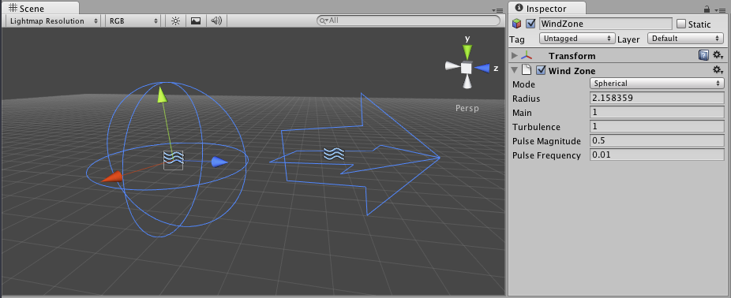

Tree - Wind Zones
Wind Zones add realism to the trees you create by making them wave their branches and leaves as if blown by the wind.

Properties
| Property: | Function: |
|---|---|
| Mode | |
| Spherical | Wind zone only has an effect inside the radius, and has a falloff from the center towards the edge. |
| Directional | Wind zone affects the entire scene in one direction. |
| Radius | Radius of the Spherical Wind Zone (only active if the mode is set to Spherical). |
| Main | The primary wind force. Produces a softly changing wind pressure. |
| Turbulence | The turbulence wind force. Produces a rapidly changing wind pressure. |
| Pulse Magnitude | Defines how much the wind changes over time. |
| Pulse Frequency | Defines the frequency of the wind changes. |
Details
Wind Zones are used only by the tree creator for animating leaves and branches. This can help your scenes appear more natural and allows forces (such as explosions) within the game to look like they are interacting with the trees. For more information about how a tree works, just visit the tree class page.
Using Wind Zones in Unity
Using Wind Zones in Unity is really simple. First of all, to create a new wind zone just click on Game Object > 3D Object > Wind Zone.
Place the wind zone (depending on the type) near the trees created with the tree creator and watch it interact with your trees!.
Note: If the wind zone is Spherical you should place it so that the trees you want to blow are within the sphere's radius. If the wind zone is directional it doesn't matter where in the scene you place it.
Hints
To produce a softly changing general wind:
- Create a directional wind zone.
- Set Wind Main to 1.0 or less, depending on how powerful the wind should be.
- Set Turbulence to 0.1.
- Set Pulse Magnitude to 1.0 or more.
- Set Pulse Frequency to 0.25.
To create the effect of a helicopter passing by:
- Create a spherical wind zone.
- Set Radius to something that fits the size of your helicopter
- Set Wind Main to 3.0
- Set Turbulence to 5.0
- Set Pulse Magnitude to 0.1
- Set Pulse Frequency to 1.0
- Attach the wind zone to a GameObject resembling your helicopter.
To create the effect of an explosion:
- Do the same as with the helicopter, but fade the Wind Main and Turbulence quickly to make the effect wear off.